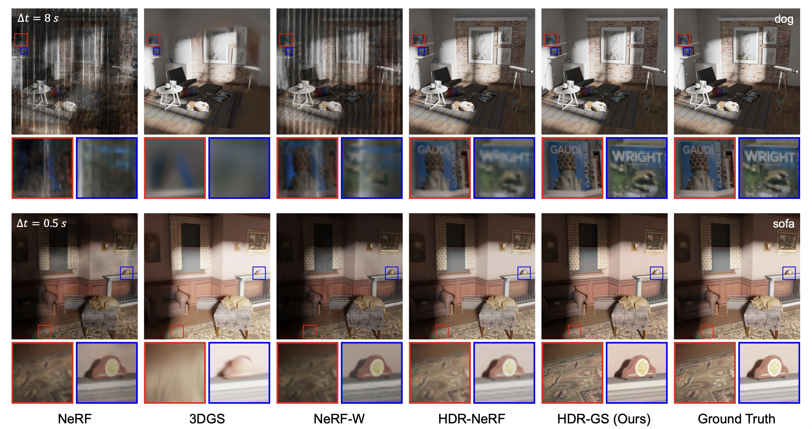
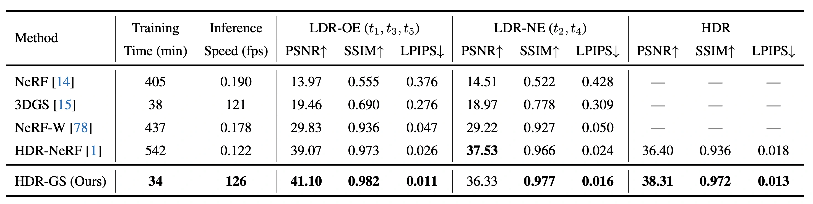
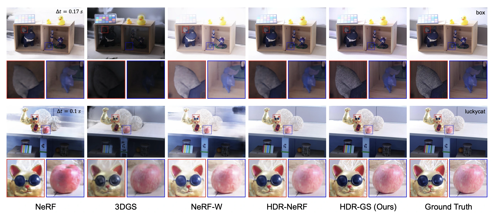

Bathroom
Unable to load video. Open video
Advances in Neural Information Processing Systems (NeurIPS), 2024
† Corresponding author
Novel-view synthesis with continuous exposure changes
Unable to load video. Open video
Unable to load video. Open video
Unable to load video. Open video
Unable to load video. Open video
Unable to load video. Open video
Unable to load video. Open video
Unable to load video. Open video
Unable to load video. Open video
Novel-view synthesis with continuous exposure changes
Unable to load video. Open video
Unable to load video. Open video
Unable to load video. Open video
Unable to load video. Open video
Each video spirals forward as exposure increases, then retraces its path as exposure decreases. Open the point cloud to explore the scene and adjust its exposure.
HDR-GS reconstructs high dynamic range scenes from photographs captured at different exposures. A shared Gaussian representation models scene radiance and learns how a camera maps that radiance to LDR colors. Parallel rasterization produces HDR novel views and exposure-controlled LDR images, enabling efficient training and real-time rendering.
Reported in the paper relative to HDR-NeRF; measurements depend on the experimental setting.
HDR-GS shares Gaussian geometry across HDR and LDR rendering. A learned tone mapper introduces exposure control before parallel rasterization.

Spherical harmonics describe directional log radiance; exponentiation yields HDR color.
Three channel-wise MLPs map log radiance and exposure to LDR.
Depth-ordered alpha blending renders both ranges using shared geometry and opacity.
Here, d is view direction, Δt is exposure time, and σ is projected opacity. Adapted from Eqs. (7), (8), and (13) in the paper.
Qualitative and quantitative results from the paper




@inproceedings{hdr_gs,
title={HDR-GS: Efficient High Dynamic Range Novel View Synthesis
at 1000x Speed via Gaussian Splatting},
author={Yuanhao Cai and Zihao Xiao and Yixun Liang and Minghan Qin
and Yulun Zhang and Xiaokang Yang and Yaoyao Liu and Alan Yuille},
booktitle={NeurIPS},
year={2024}
}